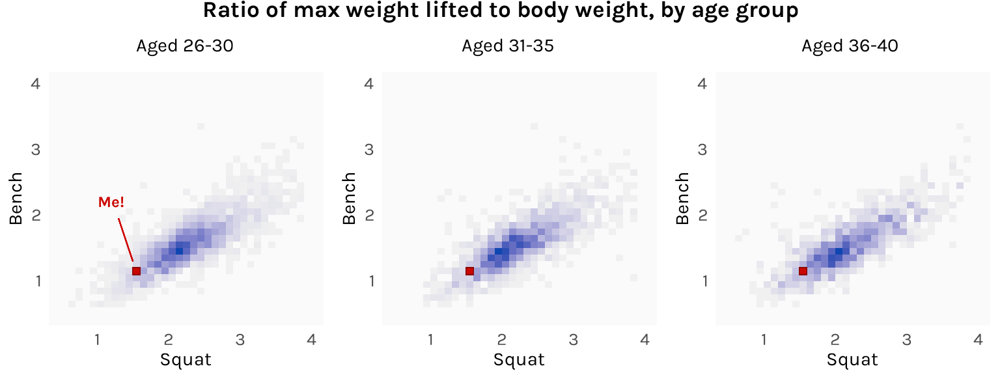

Using a massive dataset of powerlifting competitors to set my gym goals for next year
R
ggplot
Published
December 7, 2022
The pandemic (and turning 30) made me really start paying more attention to my health, and one of my resolutions was to go to the gym more consistently. It’s now been a little over a year. At the moment, my one-rep max for squats is about 1.5x my body weight, while for bench, it’s about 1.15x. As a motivator, I thought I’d look for benchmarks to work towards this coming year.
My basis will be this Kaggle dataset that contains the lifting records of over 400,000 powerlifting competitors, as listed in OpenPowerlifting.org. I might be setting the bar(bell) a bit high for myself here since I am by no means a competitive powerlifter, but consider that most people who join powerlifting comps aren’t particularly good. In fact, most of them lose! In the aggregate, the dataset will probably be a good sample of the population I’m looking to compare myself against — men who lift regularly.
I’ll subset this to keep it as relevant as possible to myself: I’ll retain males lifters only (Sex == "M"); I’ll remove records from competitions that do not require drug testing (Test == "Yes"); and I’ll remove all failed attempts, which are recorded as negative of the weight attempted (Best3SquatKg > 0 & Best3BenchKg > 0). I will then compute the ratios of the maximum weight lifted in the squat and bench press to the lifter’s body weight.
I am left with 234,174 observations on 76,233 lifters. To get an idea of what the data looks like, here are the records of some arbitrary guy I picked out named Linh Vu:
I want to get a sense of how ratios are distributed across the population, so I’ll have to keep just one record from lifters with multiple records. I thought about taking the average, but instead I opted to just choose one at random.
Since we’re looking at the distribution of two variables, a good plot use is a 2D histogram, implemented using geom_bin_2d from ggplot.
Code
library(ggplot2)# Number of observations in comma-separated formatn <- df$Name %>%unique() %>%length() %>%prettyNum(big.mark =",", scientific =FALSE)ggplot(df1, aes(x = Ratio_Squat, y = Ratio_Bench)) +geom_bin_2d(binwidth = .1) +# Label: Megeom_rect(xmin =1.5, xmax =1.6, ymin =1.1, ymax =1.2,fill ="#cc0700", color ="#8c0803", linewidth = .75 ) +annotate("text",x =1.6+ .2, y =1.1- .4, hjust =0, vjust =1,label ="Me!", size =14/ .pt, family ="karla", fontface ="bold", color ="#cc0700" ) +geom_segment(x =1.6- .01, xend =1.6+ .15, y =1.1- .07, yend =1.1- .37,color ="#cc0700", linewidth = .5 ) +# Label: Modegeom_rect(xmin =2.1, xmax =2.2, ymin =1.4, ymax =1.5,fill =NA, color ="black", linewidth = .75 ) +annotate("text",x =2.2+ .5, y =1.4, hjust =0, vjust =1,label ="Mode", size =14/ .pt, family ="karla", fontface ="bold", color ="black" ) +geom_segment(x =2.2+ .07, xend =2.2+ .45, y =1.4+ .04, yend =1.4- .05,color ="black", linewidth = .5 ) +# Labelslabs(title ="Ratio of max weight lifted to body weight",subtitle =paste0("Data on ", n, " natural male lifters") ) +scale_x_continuous(name ="Squat", limits =c(.2, 5.5), breaks =1:6) +scale_y_continuous(name ="Bench", limits =c(.2, 3.5), breaks =1:4) +# Legendscale_fill_gradient(low ="gray94", high ="#1046b1", guide ="colorbar",breaks =c(250, 500, 750, 1000) ) +guides(fill =guide_colorbar(title ="Count",title.position ="top", title.vjust =1, title.hjust = .5,barwidth =unit(.75, "lines"),barheight =unit(8, "lines"),ticks =FALSE )) +# Themetheme_minimal(base_family ="karla") +theme(plot.title =element_text(size =16, face ="bold", hjust = .5),plot.subtitle =element_text(size =14, hjust = .5, margin =margin(b =15)),axis.ticks =element_blank(),axis.title.x =element_text(size =12, margin =margin(t =10)),axis.title.y =element_text(size =12, margin =margin(r =10)),axis.text.x =element_text(size =12, margin =margin(t =5)),axis.text.y =element_text(size =12, margin =margin(r =5)),legend.position ="right",legend.title =element_text(size =12, face ="bold"),legend.text =element_text(size =10),panel.background =element_rect(fill ="gray98", color =NA),panel.grid.major.x =element_blank(),panel.grid.major.y =element_blank(),panel.grid.minor.x =element_blank(),panel.grid.minor.y =element_blank() )
The mode is 2.1-2.2x for squat and 1.4-1.5x for bench. I’m some ways off from the histogram’s central tendency, but not as far as I thought! Getting to that dark blue region is totally doable. I’ll revisit this chart a year from now and see where I am.
As a bonus, it might also be interesting to divide the lifters into age brackets and see how the distribution changes. My guess is that lifters in their mid-20s would be stronger than lifters in their late 30s. However, here is what I get:
Code
library(cowplot)# Common plot elementsbin <-geom_bin_2d(binwidth = .1)me_box <-geom_rect(xmin =1.5, xmax =1.6, ymin =1.1, ymax =1.2,fill ="#cc0700", color ="#8c0803", linewidth = .25)fill <-scale_fill_gradient(low ="gray94", high ="#1046b1")x_axis <-scale_x_continuous(name ="Squat", limits =c(.5, 4), breaks =1:4)y_axis <-scale_y_continuous(name ="Bench", limits =c(.5, 4), breaks =1:4)theme <-theme_minimal(base_family ="karla") +theme(panel.background =element_rect(fill ="gray98", color =NA),panel.grid.major.x =element_blank(),panel.grid.major.y =element_blank(),panel.grid.minor.x =element_blank(),panel.grid.minor.y =element_blank(),axis.ticks =element_blank(),axis.title.x =element_text(size =11, margin =margin(t =5)),axis.title.y =element_text(size =11, margin =margin(r =5)),axis.text =element_text(size =10),legend.position ="none" )# Plotsp1 <-ggplot( df1 %>%filter(Age %in%26:30),aes(x = Ratio_Squat, y = Ratio_Bench)) + bin + me_box + fill + x_axis + y_axis + theme +annotate("text",x =1.2, y =2.2, size =9/ .pt, hjust = .5, vjust = .5,label ="Me!", family ="karla", fontface ="bold", color ="#cc0700" ) +geom_segment(x =1.5, xend =1.3, y =1.2+ .1, yend =2.2- .25,color ="#cc0700", linewidth = .25 )p2 <-ggplot( df1 %>%filter(Age %in%31:35),aes(x = Ratio_Squat, y = Ratio_Bench)) + bin + me_box + fill + x_axis + y_axis + themep3 <-ggplot( df1 %>%filter(Age %in%36:40),aes(x = Ratio_Squat, y = Ratio_Bench)) + bin + me_box + fill + x_axis + y_axis + theme# Consolidatetitle <-ggdraw() +draw_label("Ratio of max weight lifted to body weight, by age group",fontfamily ="karla", fontface ="bold", x = .5, hjust = .5, size =13 ) +theme(plot.margin =margin(t =-15, b =10))plots <-plot_grid(p1, p2, p3,nrow =1,labels =c("Aged 26-30", "Aged 31-35", "Aged 36-40"),label_size =11, label_fontfamily ="karla", label_fontface ="plain",hjust =-1.4, vjust =-.9)plot_grid(title, plots, ncol =1, rel_heights =c(.2, 1))

The histograms don’t actually differ all that much. It’s possible that the bodily disadvantages of age are offset by the skills advantages of more training and experience. Just look at Linh Vu!